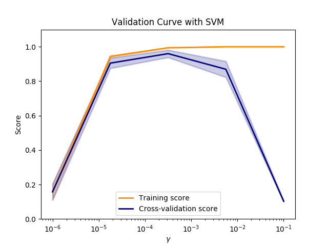

Note
Click here to download the full example code or run this example in your browser via Binder
Plotting Validation Curves¶
In this plot you can see the training scores and validation scores of an SVM for different values of the kernel parameter gamma. For very low values of gamma, you can see that both the training score and the validation score are low. This is called underfitting. Medium values of gamma will result in high values for both scores, i.e. the classifier is performing fairly well. If gamma is too high, the classifier will overfit, which means that the training score is good but the validation score is poor.
Out:
print(__doc__)
import matplotlib.pyplot as plt
import numpy as np
from sklearn.datasets import load_digits
from sklearn.svm import SVC
from sklearn.model_selection import validation_curve
X, y = load_digits(return_X_y=True)
param_range = np.logspace(-6, -1, 5)
train_scores, test_scores = validation_curve(
SVC(), X, y, param_name="gamma", param_range=param_range,
scoring="accuracy", n_jobs=1)
train_scores_mean = np.mean(train_scores, axis=1)
train_scores_std = np.std(train_scores, axis=1)
test_scores_mean = np.mean(test_scores, axis=1)
test_scores_std = np.std(test_scores, axis=1)
plt.title("Validation Curve with SVM")
plt.xlabel(r"$\gamma$")
plt.ylabel("Score")
plt.ylim(0.0, 1.1)
lw = 2
plt.semilogx(param_range, train_scores_mean, label="Training score",
color="darkorange", lw=lw)
plt.fill_between(param_range, train_scores_mean - train_scores_std,
train_scores_mean + train_scores_std, alpha=0.2,
color="darkorange", lw=lw)
plt.semilogx(param_range, test_scores_mean, label="Cross-validation score",
color="navy", lw=lw)
plt.fill_between(param_range, test_scores_mean - test_scores_std,
test_scores_mean + test_scores_std, alpha=0.2,
color="navy", lw=lw)
plt.legend(loc="best")
plt.show()
Total running time of the script: ( 0 minutes 10.339 seconds)